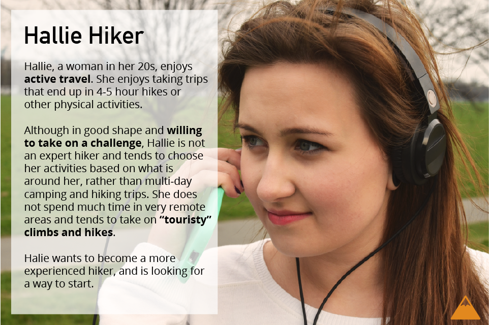

Peak Match mobile app
Peak Match is the design for a mobile application which identifies mountain peaks from a photo of the peak, using GPS and compass information.
Requirements for this application and feedback was obtained by speaking to a group of casual hikers about what they wish they knew when looking around at a view. The application is simple and focuses on the main action (identifying a peak) with a small "save" feature for users to keep track of mountains they're interested in.

(Created with Illustrator and Marvel)
On mobile? This unfortunately won't render well under 700px wide.